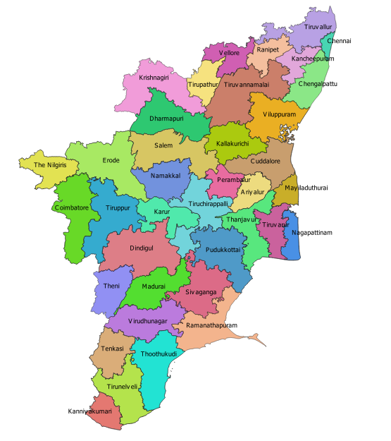

import pandas as pd
import plotly as px
from itables import showIndia TB Pathways Analysis
The India TB Pathways dataset is based on a study conducted in Vellore district, Tamil Nadu, India. It examines the pre-diagnostic costs and health-seeking behavior of 880 new adult pulmonary tuberculosis patients registered at Primary Health Centres (PHCs).
india_tb=pd.read_csv('/Users/zorangavrilov/Desktop/graph_courses_python/india_tb/india_tb_pathways_and_costs.csv')
show(india_tb)| id | Sex | Age | Education | Employment | Alcohol | Smoking | WtinKgs | HtinCms | bmi | Diabetes | Form of TB | Chext Xray | first visit location | first visit cost | second visit location | second visit cost | third visit location | third visit cost | Health sys delay (in days) | Treatment initiation delay (in days) |
|---|---|---|---|---|---|---|---|---|---|---|---|---|---|---|---|---|---|---|---|---|
|
Loading ITables v2.2.2 from the internet...
(need help?) |

Relationship between smoking habit and form of TB
form_of_tb_plot=px.hist_frame(india_tb, x='Smoking', color='Form of TB', text_auto=True)
form_of_tb_plot.show()The distribution of the Form of TB among the smokers and non smokers seems to be similar.